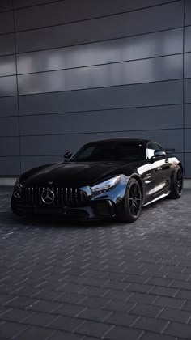
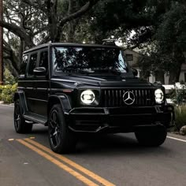
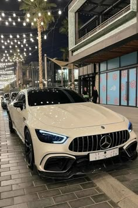
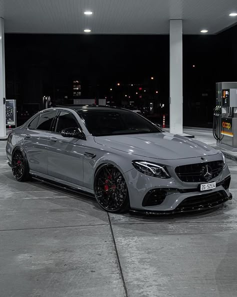

História e Inovação
A Mercedes-Benz é uma das marcas de automóveis mais antigas e respeitadas do mundo. Fundada em 1926, a empresa sempre esteve na vanguarda da inovação automotiva.
Desde o início, a Mercedes-Benz se destacou por suas inovações tecnológicas. Em 1931, a marca lançou o primeiro carro com suspensão independente nas quatro rodas, um marco na indústria automotiva.
Ao longo das décadas, a Mercedes continuou a inovar, introduzindo tecnologias como o sistema de freios ABS, airbags e controle de tração, que hoje são padrão na indústria.
A marca também foi pioneira na introdução de motores a diesel em carros de passeio, aumentando a eficiência e a durabilidade dos veículos.
Além disso, a Mercedes-Benz tem uma rica história no automobilismo, com inúmeras vitórias em corridas de Fórmula 1 e outras competições de prestígio.
A Mercedes-Benz é uma das marcas de automóveis mais antigas e respeitadas do mundo. Fundada em 1926, a empresa sempre esteve na vanguarda da inovação automotiva.
Desde o início, a Mercedes-Benz se destacou por suas inovações tecnológicas. Em 1931, a marca lançou o primeiro carro com suspensão independente nas quatro rodas, um marco na indústria automotiva.
Ao longo das décadas, a Mercedes continuou a inovar, introduzindo tecnologias como o sistema de freios ABS, airbags e controle de tração, que hoje são padrão na indústria.
A marca também foi pioneira na introdução de motores a diesel em carros de passeio, aumentando a eficiência e a durabilidade dos veículos.
Além disso, a Mercedes-Benz tem uma rica história no automobilismo, com inúmeras vitórias em corridas de Fórmula 1 e outras competições de prestígio.
Design e Conforto
Os carros da Mercedes são conhecidos pelo seu design elegante e conforto incomparável. Cada detalhe é pensado para proporcionar a melhor experiência ao motorista e passageiros.
O design dos veículos Mercedes-Benz é uma combinação de estética e funcionalidade. A marca trabalha com os melhores designers do mundo para criar carros que são verdadeiras obras de arte sobre rodas.
Além do design externo, o interior dos carros Mercedes é projetado para oferecer o máximo de conforto e luxo. Materiais de alta qualidade, tecnologia de ponta e atenção aos detalhes fazem dos carros Mercedes um verdadeiro prazer de dirigir.
Os assentos são ergonomicamente projetados para oferecer suporte e conforto em longas viagens, enquanto os sistemas de entretenimento e conectividade mantêm todos os ocupantes entretidos.
A iluminação ambiente personalizável e os sistemas de som premium são apenas alguns dos toques de luxo que fazem dos carros Mercedes uma escolha superior.
Os carros da Mercedes são conhecidos pelo seu design elegante e conforto incomparável. Cada detalhe é pensado para proporcionar a melhor experiência ao motorista e passageiros.
O design dos veículos Mercedes-Benz é uma combinação de estética e funcionalidade. A marca trabalha com os melhores designers do mundo para criar carros que são verdadeiras obras de arte sobre rodas.
Além do design externo, o interior dos carros Mercedes é projetado para oferecer o máximo de conforto e luxo. Materiais de alta qualidade, tecnologia de ponta e atenção aos detalhes fazem dos carros Mercedes um verdadeiro prazer de dirigir.
Os assentos são ergonomicamente projetados para oferecer suporte e conforto em longas viagens, enquanto os sistemas de entretenimento e conectividade mantêm todos os ocupantes entretidos.
A iluminação ambiente personalizável e os sistemas de som premium são apenas alguns dos toques de luxo que fazem dos carros Mercedes uma escolha superior.

Tecnologia de Ponta
A Mercedes-Benz investe pesado em tecnologia, oferecendo sistemas de segurança avançados, conectividade e eficiência energética em seus veículos.
Os sistemas de assistência ao motorista da Mercedes, como o piloto automático adaptativo e o assistente de manutenção de faixa, são alguns dos mais avançados do mercado.
Além disso, a Mercedes está na vanguarda da tecnologia de veículos elétricos e híbridos, com modelos como o EQC e o S 560e, que combinam desempenho e sustentabilidade.
A marca também está desenvolvendo tecnologias de condução autônoma, com o objetivo de tornar as estradas mais seguras e eficientes.
Os sistemas de infotainment da Mercedes são intuitivos e fáceis de usar, oferecendo uma experiência de usuário superior.
A Mercedes-Benz investe pesado em tecnologia, oferecendo sistemas de segurança avançados, conectividade e eficiência energética em seus veículos.
Os sistemas de assistência ao motorista da Mercedes, como o piloto automático adaptativo e o assistente de manutenção de faixa, são alguns dos mais avançados do mercado.
Além disso, a Mercedes está na vanguarda da tecnologia de veículos elétricos e híbridos, com modelos como o EQC e o S 560e, que combinam desempenho e sustentabilidade.
A marca também está desenvolvendo tecnologias de condução autônoma, com o objetivo de tornar as estradas mais seguras e eficientes.
Os sistemas de infotainment da Mercedes são intuitivos e fáceis de usar, oferecendo uma experiência de usuário superior.

Performance e Potência
Os motores da Mercedes são sinônimo de potência e performance. A marca oferece uma gama de veículos que atendem desde os entusiastas de carros esportivos até os que buscam luxo e conforto.
Os modelos AMG da Mercedes são conhecidos por sua performance excepcional. Com motores potentes e engenharia de precisão, esses carros oferecem uma experiência de direção incomparável.
Além dos carros esportivos, a Mercedes também oferece SUVs e sedãs de luxo que combinam potência e conforto, proporcionando uma experiência de direção superior em qualquer situação.
Os motores turboalimentados e as transmissões de alta performance garantem uma aceleração rápida e uma condução suave.
A Mercedes também oferece opções de tração integral para melhorar a aderência e a estabilidade em todas as condições de estrada.
Os motores da Mercedes são sinônimo de potência e performance. A marca oferece uma gama de veículos que atendem desde os entusiastas de carros esportivos até os que buscam luxo e conforto.
Os modelos AMG da Mercedes são conhecidos por sua performance excepcional. Com motores potentes e engenharia de precisão, esses carros oferecem uma experiência de direção incomparável.
Além dos carros esportivos, a Mercedes também oferece SUVs e sedãs de luxo que combinam potência e conforto, proporcionando uma experiência de direção superior em qualquer situação.
Os motores turboalimentados e as transmissões de alta performance garantem uma aceleração rápida e uma condução suave.
A Mercedes também oferece opções de tração integral para melhorar a aderência e a estabilidade em todas as condições de estrada.

Compromisso com a Sustentabilidade
A Mercedes-Benz está comprometida com a sustentabilidade e a redução de emissões. A marca tem investido em tecnologias verdes e na produção de veículos elétricos e híbridos.
Os modelos da linha EQ, como o EQC e o EQS, são exemplos do compromisso da Mercedes com um futuro mais sustentável. Esses veículos oferecem alta performance com zero emissões.
Além disso, a Mercedes está trabalhando para tornar suas fábricas mais sustentáveis, utilizando energia renovável e reduzindo o desperdício na produção.
A marca também está investindo em programas de reciclagem e reutilização de materiais para minimizar o impacto ambiental.
A Mercedes-Benz está comprometida em alcançar a neutralidade de carbono em todas as suas operações até 2039.
A Mercedes-Benz está comprometida com a sustentabilidade e a redução de emissões. A marca tem investido em tecnologias verdes e na produção de veículos elétricos e híbridos.
Os modelos da linha EQ, como o EQC e o EQS, são exemplos do compromisso da Mercedes com um futuro mais sustentável. Esses veículos oferecem alta performance com zero emissões.
Além disso, a Mercedes está trabalhando para tornar suas fábricas mais sustentáveis, utilizando energia renovável e reduzindo o desperdício na produção.
A marca também está investindo em programas de reciclagem e reutilização de materiais para minimizar o impacto ambiental.
A Mercedes-Benz está comprometida em alcançar a neutralidade de carbono em todas as suas operações até 2039.

Reconhecimento e Prêmios
A Mercedes-Benz é uma das marcas mais premiadas do mundo. A empresa já recebeu inúmeros prêmios por design, inovação, segurança e performance.
Entre os prêmios mais recentes, a Mercedes foi eleita a "Marca de Carro do Ano" pela revista Auto Motor und Sport e recebeu o prêmio "Melhor Carro de Luxo" pelo World Car Awards.
Esses prêmios são um reconhecimento do compromisso da Mercedes com a excelência e a inovação na indústria automotiva.
A marca também recebeu prêmios por suas iniciativas de sustentabilidade e responsabilidade social.
Os veículos da Mercedes-Benz são frequentemente classificados como os melhores em suas categorias por publicações e organizações de renome.
A Mercedes-Benz é uma das marcas mais premiadas do mundo. A empresa já recebeu inúmeros prêmios por design, inovação, segurança e performance.